<title>Do Dynamics Models Have Physics Neurons?</title>
<meta name="claude:viewport-fit-sides" content="cover">
<link rel="preconnect" href="https://fonts.googleapis.com">
<link rel="preconnect" href="https://fonts.gstatic.com" crossorigin>
<link rel="stylesheet" href="https://fonts.googleapis.com/css2?family=Schibsted+Grotesk:wght@500;700;800&family=Source+Serif+4:ital,opsz,wght@0,8..60,400;0,8..60,600;1,8..60,400&family=JetBrains+Mono:wght@400;600&display=swap">
<script>
window.MathJax = { tex: { inlineMath: [["$","$"]], displayMath: [["$$","$$"]], packages: {"[+]": ["ams"]} },
  svg: { fontCache: "global" } };
</script>
<script src="https://cdnjs.cloudflare.com/ajax/libs/mathjax/3.2.2/es5/tex-svg-full.min.js" async></script>
<style>
/* Layout: a paper column (46rem) with full-width figure plates (64rem); figures sit on light plates in both themes because they are rendered on a light chart surface. */
:root {
  --bg: #f5f7f9;
  --surface: #ffffff;
  --ink: #18212b;
  --muted: #5a6876;
  --rule: #d6dde4;
  --accent: #2550c4;
  --force: #b8601c;
  --yes: #1f7a46;
  --part: #9a6a12;
  --no: #b03636;
  --code-bg: #eef2f6;
  --plate: #fcfcfb;
  --display: "Schibsted Grotesk", "Helvetica Neue", Arial, sans-serif;
  --body: "Source Serif 4", Georgia, "Times New Roman", serif;
  --mono: "JetBrains Mono", ui-monospace, Menlo, monospace;
}
@media (prefers-color-scheme: dark) {
  :root:not([data-theme="light"]) {
    --bg: #11161c; --surface: #18202a; --ink: #e3e9ef; --muted: #98a6b4; --rule: #2c3743;
    --accent: #7d9cf0; --force: #e39a5c; --yes: #6cc28e; --part: #e0b45e; --no: #ec7b7b; --code-bg: #1d2631; --plate: #fcfcfb;
    color-scheme: dark;
  }
}
:root[data-theme="dark"] {
  --bg: #11161c; --surface: #18202a; --ink: #e3e9ef; --muted: #98a6b4; --rule: #2c3743;
  --accent: #7d9cf0; --force: #e39a5c; --yes: #6cc28e; --part: #e0b45e; --no: #ec7b7b; --code-bg: #1d2631; --plate: #fcfcfb;
  color-scheme: dark;
}
* { box-sizing: border-box; }
body {
  background: var(--bg); color: var(--ink);
  font-family: var(--body); font-size: 1.06rem; line-height: 1.62;
  padding-left: max(16px, env(safe-area-inset-left, 0px));
  padding-right: max(16px, env(safe-area-inset-right, 0px));
  padding-block: 2.5rem 5rem;
}
main { max-width: 46rem; margin: 0 auto; display: flex; flex-direction: column; gap: 1.05rem; }
.wide { max-width: 64rem; width: min(64rem, calc(100vw - 32px)); align-self: center; }
h1, h2, h3, h4 { font-family: var(--display); text-wrap: balance; line-height: 1.15; margin: 0; }
h1 { font-size: clamp(2.1rem, 5vw, 3.2rem); font-weight: 800; letter-spacing: -0.02em; }
h2 { font-size: 1.7rem; font-weight: 800; margin-top: 2.2rem; padding-top: 1.3rem; border-top: 2px solid var(--ink); }
h3 { font-size: 1.2rem; font-weight: 700; margin-top: 1.1rem; }
h4 { font-size: 1rem; font-weight: 700; }
p, ul, ol { margin: 0; }
ul, ol { padding-left: 1.3rem; display: flex; flex-direction: column; gap: .35rem; }
a { color: var(--accent); text-underline-offset: 2px; }
a:focus-visible { outline: 2px solid var(--accent); outline-offset: 2px; }
.eyebrow { font-family: var(--mono); font-size: .75rem; letter-spacing: .12em; text-transform: uppercase; color: var(--muted); }
.meta { font-family: var(--mono); font-size: .8rem; color: var(--muted); }
.sec-num { font-family: var(--mono); color: var(--accent); font-weight: 600; margin-right: .5rem; }
code { font-family: var(--mono); font-size: .86em; background: var(--code-bg); padding: .08em .3em; border-radius: 3px; }
.abstract { border-left: 3px solid var(--accent); padding: .3rem 0 .3rem 1.1rem; display: flex; flex-direction: column; gap: .7rem; }
.abstract h4 { font-size: .8rem; letter-spacing: .1em; text-transform: uppercase; color: var(--muted); }
.note { border-left: 3px solid var(--force); padding: .2rem 0 .2rem 1rem; }
.note strong { font-family: var(--display); }
.toc { display: grid; grid-template-columns: repeat(auto-fit, minmax(13rem, 1fr)); gap: .5rem 1.5rem; padding: 1rem 0; border-block: 1px solid var(--rule); font-family: var(--display); font-size: .93rem; }
.toc a { text-decoration: none; color: var(--ink); }
.toc a span { color: var(--accent); font-family: var(--mono); margin-right: .4rem; }
.tbl { overflow-x: auto; border: 1px solid var(--rule); border-radius: 6px; background: var(--surface); }
table { border-collapse: collapse; width: 100%; font-size: .9rem; line-height: 1.45; }
th, td { text-align: left; vertical-align: top; padding: .55rem .7rem; border-bottom: 1px solid var(--rule); }
th { font-family: var(--display); font-size: .78rem; letter-spacing: .04em; text-transform: uppercase; color: var(--muted); background: var(--code-bg); }
tr:last-child td { border-bottom: 0; }
td.num, .num { font-family: var(--mono); font-variant-numeric: tabular-nums; white-space: nowrap; font-size: .85rem; }
td:first-child { font-family: var(--display); font-weight: 600; }
.verdict { display: inline-flex; align-items: center; gap: .3rem; font-family: var(--mono); font-size: .72rem; font-weight: 600; padding: .05rem .45rem; border-radius: 999px; border: 1px solid currentColor; white-space: nowrap; }
.verdict::before { content: ""; width: .5rem; height: .5rem; border-radius: 50%; background: currentColor; }
.v-yes { color: var(--yes); } .v-part { color: var(--part); } .v-no { color: var(--no); } .v-na { color: var(--muted); }
.v-part::before { background: linear-gradient(90deg, currentColor 50%, transparent 50%); border: 1px solid currentColor; }
.v-no::before { background: transparent; border: 1px solid currentColor; }
.matrix td { min-width: 12rem; }
.matrix td p { font-size: .85rem; margin-top: .3rem; color: var(--ink); }
figure { margin: 0; display: flex; flex-direction: column; gap: .55rem; }
.plate { background: var(--plate); border: 1px solid var(--rule); border-radius: 6px; padding: .6rem; overflow-x: auto; }
.plate img { display: block; width: 100%; height: auto; min-width: 560px; }
.plate.narrow { max-width: 34rem; }
figcaption { font-size: .9rem; color: var(--muted); line-height: 1.5; }
figcaption b { color: var(--ink); font-family: var(--display); }
.pair { display: grid; grid-template-columns: repeat(auto-fit, minmax(20rem, 1fr)); gap: 1rem; }
.pair .plate img { min-width: 0; }
.eq { overflow-x: auto; overflow-y: hidden; background: var(--surface); border: 1px solid var(--rule); border-radius: 6px; padding: .3rem .9rem; }
mjx-container { color: var(--ink); }
.kv { display: grid; grid-template-columns: repeat(auto-fit, minmax(13rem, 1fr)); gap: .8rem; }
.kv div { background: var(--surface); border: 1px solid var(--rule); border-radius: 6px; padding: .7rem .9rem; display: flex; flex-direction: column; gap: .15rem; min-width: 0; }
.kv .n { font-family: var(--display); font-size: 1.5rem; font-weight: 800; font-variant-numeric: tabular-nums; }
.kv .l { font-size: .85rem; color: var(--muted); }
.pending { border: 1px dashed var(--rule); border-radius: 6px; padding: 1rem 1.1rem; background: var(--surface); display: flex; flex-direction: column; gap: .5rem; }
.refs { font-size: .9rem; }
@media (max-width: 560px) { body { font-size: 1rem; } }
@media (prefers-reduced-motion: reduce) { * { scroll-behavior: auto !important; } }
</style>

<main>
  <header style="display:flex;flex-direction:column;gap:.9rem">
    <div class="eyebrow">phys-interp · report 2 · first pass · 16 Oct 2026</div>
    <h1>Do dynamics models have physics neurons?</h1>
    <p class="meta">Two-link arm in MuJoCo · three models trained from scratch, one pretrained VLM · neuron-level analysis in the style of Cammarata, <a href="https://already-clean.goodfire.com/">“Neural Networks Are Already Clean”</a> · companion to <a href="https://claude.ai/artifact/QR2538YtzPNDj91di8ETvy">report 1</a></p>
  </header>

  <section class="abstract" aria-label="Abstract">
    <h4>Abstract</h4>
    <p>We trained small networks to predict the motion of a simulated two-link arm that swings under gravity and hits a floor and a wall. Every term of its equation of motion is logged, so each hidden unit can be compared against the true gravity torque, interaction torque, contact force, acceleration and state. We then ran the analyses from the circuits and “already clean” work: a one-job census, linear probes, dataset-example galleries with negative poles, feature visualization, event-aligned contact responses, ablation and steering, and replays across training.</p>
    <p>The answers differ by quantity. <strong>State is everywhere, and velocity is built exactly where the architecture says it must be</strong>: a video model's single-frame encoder has none (probe R² 0.02) and its first temporal block creates it (0.58, rising to 0.90). <strong>Gravity torque units exist</strong> and match the analytic gravity map, but gravity is almost free here because it is a function of posture. When gravity's direction is hidden, a transformer infers it in about two frames and stores it <strong>relative to the upper arm, in a 2-D plane that it causally uses</strong>, not in head-direction-like cells. <strong>Shoulder torques get their own units; elbow torques mostly don't.</strong> <strong>Contact appears as a few impact units</strong> that fire on the frame before a collision and stay silent at near misses, while units that look like contact units are mostly proximity detectors. <strong>Acceleration is decodable but never lives in single units.</strong> It is distributed and nonlinear, and ablating candidate units does not remove it.</p>
    <p>In a pixel model, training makes units about 4× cleaner than random features, as the essay predicts. But most of the clean units encode posture or stillness, and the physical quantities a dynamics model must compute are mostly distributed.</p>
  </section>

  <nav class="toc" aria-label="Contents">
    <a href="#answers"><span>0</span>Answers at a glance</a>
    <a href="#setup"><span>1</span>Testbed and methods</a>
    <a href="#state"><span>2</span>State MLP</a>
    <a href="#video"><span>3</span>Video model</a>
    <a href="#grav"><span>4</span>Gravity vector</a>
    <a href="#vlm"><span>5</span>Pretrained VLM</a>
    <a href="#recursive"><span>6</span>Recursive generalization</a>
    <a href="#discussion"><span>7</span>Discussion</a>
    <a href="#limits"><span>8</span>Limitations and next steps</a>
  </nav>

  <!-- =========================================================== 0 -->
  <h2 id="answers"><span class="sec-num">0</span>Answers at a glance</h2>
  <p>The questions we set out to answer, by model. “Yes” means single units or a readable direction carry the quantity <em>and</em> it survives the controls (random-init network, raw input, aliasing with posture). “Partial” means it is there but distributed, aliased or only weakly causal.</p>
  <div class="tbl wide matrix">
  <table>
    <thead><tr><th>Question</th><th>State MLP<br><span class="meta">joint state → next state</span></th><th>Video model<br><span class="meta">4 frames → next 2 frames</span></th><th>Gravity transformer<br><span class="meta">history, gravity hidden</span></th></tr></thead>
    <tbody>
      <tr><td>Gravity torque?</td>
        <td><span class="verdict v-yes">yes, shoulder</span><p>L2/826 R² 0.86; resting receptive field matches the analytic map (0.67). Residual-direction edit moves gravity 50–80% of ideal; unit ablation only 25%.</p></td>
        <td><span class="verdict v-part">free</span><p>Units exist (enc3.401, R² 0.86) but raw pixels already give R² 0.998, so they are posture units under another name.</p></td>
        <td><span class="verdict v-yes">yes, body frame</span><p>Stored as θg − q₁ in a 2-D plane; overwriting it steers falls to any direction (19.5° error, at the noise floor).</p></td></tr>
      <tr><td>Different torques at different segments?</td>
        <td><span class="verdict v-part">shoulder only</span><p>Gravity units 80% shoulder-specific, 0.6% elbow. Coriolis 16% elbow-specific, 81% mixed. Contact torque 97.5% mixed.</p></td>
        <td><span class="verdict v-part">shoulder only</span><p>Of 480 torque units, 27.5% shoulder-selective, 4.2% elbow-selective, 68% mixed.</p></td>
        <td><span class="verdict v-part">shoulder 2×</span><p>Shoulder gravity torque tracked about twice as well as elbow; preferred directions cluster where shoulder torque peaks.</p></td></tr>
      <tr><td>Contact forces?</td>
        <td><span class="verdict v-part">impact units</span><p>L4/49 fires the frame before fast impacts (0.6–0.7) and is silent at near misses; ablating 57 such units removes 21% of the bounce.</p></td>
        <td><span class="verdict v-part">one unit</span><p>tmp3.48 anticipates floor impacts (AUC 0.76 vs 0.73 baseline). Encoder “contact” units are proximity detectors. Ablation changes nothing.</p></td>
        <td><span class="verdict v-na">n/a</span><p>No obstacles in this scene.</p></td></tr>
      <tr><td>State of the system?</td>
        <td><span class="verdict v-yes">yes (input)</span><p>Angles, velocities, torque at R² ≥ 0.98 everywhere; trivially, since they are inputs.</p></td>
        <td><span class="verdict v-yes">yes, computed</span><p>Posture in the per-frame encoder (R² 1.00). Velocity absent there (0.02) and created by temporal attention (0.90 / 0.63).</p></td>
        <td><span class="verdict v-yes">yes</span><p>Posture and velocity are inputs; single units mostly track elbow angle.</p></td></tr>
      <tr><td>Predicts acceleration?</td>
        <td><span class="verdict v-part">distributed</span><p>Step-mean acceleration probe 0.96 at block 4 (random 0.75). No clean acceleration units; top “acceleration” units are contact spikes.</p></td>
        <td><span class="verdict v-part">nonlinear</span><p>0 clean acceleration units. Linear probe 0.33; MLP probe 0.68, above an MLP on the true instantaneous state (0.55).</p></td>
        <td><span class="verdict v-yes">implicitly</span><p>Next-frame error matches a model told θg; it must form the gravitational acceleration.</p></td></tr>
      <tr><td>Cleaner than random?</td>
        <td><span class="verdict v-no">no</span><p>21% clean vs 25% at random init (8-D input makes random units clean). Clean on a derived quantity: 7.5% vs 4.6%.</p></td>
        <td><span class="verdict v-yes">yes, 4×</span><p>24.6% clean vs 6.5% at random init. Mostly posture and stillness.</p></td>
        <td><span class="verdict v-no">no cells</span><p>3 of 2,048 units tuned to gravity direction at R² ≥ 0.3.</p></td></tr>
    </tbody>
  </table>
  </div>
  <p>The fourth model, Qwen3-VL-4B, is being re-run on the CUDA machine; its column will be added in section 5.</p>

  <!-- =========================================================== 1 -->
  <h2 id="setup"><span class="sec-num">1</span>Testbed and methods</h2>
  <h3>1.1 An arm whose physics we can read off</h3>
  <p>A planar two-link arm (upper arm 0.50 m, 2.0 kg; forearm 0.45 m, 1.2 kg) hangs from a shoulder hinge in a vertical plane. A floor sits 0.86 m below the shoulder and a wall 0.68 m to the right; only the forearm can reach them. Episodes last 3 s at 50 Hz, driven by one of three controllers: passive swinging, sums of random sinusoidal torques, or PD reaching to random targets with no gravity compensation. MuJoCo integrates</p>
  <div class="eq">$$M(q)\,\ddot q \;+\; c(q,\dot q) \;+\; g(q) \;=\; \tau_{\text{act}} \;+\; \tau_{\text{contact}} \;-\; b\,\dot q$$</div>
  <p>and at every frame we log each term separately: the gravity torque $-g(q)$, the Coriolis/centripetal torque $-c$, the <em>interaction torque</em> each joint receives from the other joint's motion, $M_{12}\ddot q_{2}+c_1$ at the shoulder and $M_{21}\ddot q_{1}+c_2$ at the elbow, contact forces by surface and segment, and the energies. The decomposition closes to $1.5\times10^{-5}$ N·m. From these we build 32 target variables in 8 families (posture, velocity, acceleration, gravity, interaction, contact, applied torque, energy) that every analysis shares.</p>
  <figure class="wide">
    <div class="plate">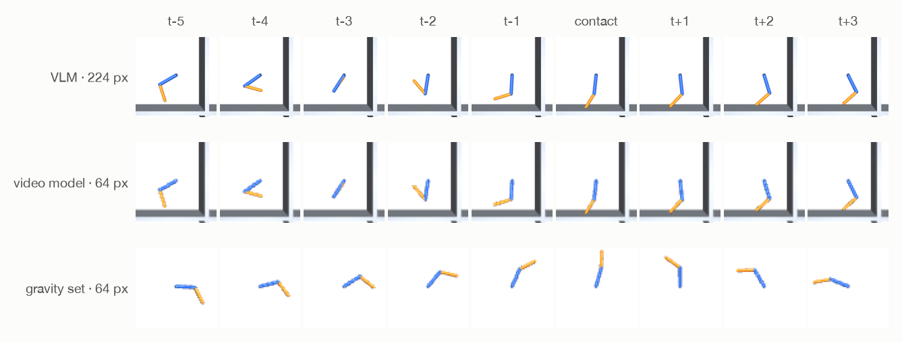</div>
    <figcaption><b>Figure 1.</b> What the models see. A fast forearm impact with the floor (test episode 2077) from five frames before to three after contact, rendered at 224 px (top) and at the 64 px used by the video model (middle). Bottom: a clip from the gravity set, which has no obstacles and a random gravity direction. The state models see no pixels at all, only the joint state.</figcaption>
  </figure>

  <h3>1.2 Models</h3>
  <div class="tbl wide">
  <table>
    <thead><tr><th>Model</th><th>Input → target</th><th>Architecture</th><th>Accuracy (held out)</th></tr></thead>
    <tbody>
      <tr><td>State MLP</td><td>sin q, cos q, q̇, τ at t → Δq, Δq̇ over 20 ms</td><td>Residual stream 256, 4 pre-LN blocks of 256→1024 ReLU→256; 2.1 M params; AdamW 60k steps</td><td class="num">R² Δq̇ 0.965 / 0.971<br>linear 0.10 / 0.08</td></tr>
      <tr><td>Video model</td><td>RGB frames t−3…t (64 px) → frames t+1, t+2</td><td>Per-frame ConvNeXt encoder (4 blocks) then factorized space-time transformer (4 blocks) then decoder; 1.75 M params; 30k steps on CUDA</td><td class="num">skill vs copy-last 0.91<br>at contact onset 0.90</td></tr>
      <tr><td>Gravity transformer</td><td>up to 64 past states, gravity direction never given → next state</td><td>Causal pre-LN transformer, width 128, 4 blocks, GELU MLP 512; 0.8 M params; 30k steps on 10k episodes</td><td class="num">matches a model told θg after ~2 frames</td></tr>
      <tr><td>Qwen3-VL-4B</td><td>8 frames at 25 fps, 320 px → text</td><td>Pretrained VLM; SwiGLU language MLPs, GELU vision MLPs</td><td class="num">in progress (section 5)</td></tr>
    </tbody>
  </table>
  </div>
  <p>The architectures follow the readability lessons of report 1: residual streams, pre-LayerNorm, one wide nonlinearity per block, and separate spatial, temporal and channel mixing. In the video model this separation is also a built-in control. Its encoder sees one frame at a time, so any velocity it carries must come from the image alone.</p>

  <h3>1.3 The census and its controls</h3>
  <p>For each live unit (active on more than 1% of held-out frames) we fit its activation $a$ as a piecewise-constant function of each target $y_k$ over 30 quantile bins, which captures rectified and tuned responses that a correlation would miss:</p>
  <div class="eq">$$R^2_{\text{bin}}(a, y_k) = 1-\frac{\operatorname{Var}\!\big(a-\bar a_{\,\text{bin}(y_k)}\big)}{\operatorname{Var}(a)},\qquad k^\star=\arg\max_k R^2_{\text{bin}}(a,y_k)$$</div>
  <p>A unit is <em>clean</em> if $R^2_{\text{bin}}(a,y_{k^\star})\ge 0.5$, <em>partial</em> if it is between 0.25 and 0.5, and <em>unexplained</em> otherwise. It is a <em>conjunction</em> if its best two-variable fit beats its best single variable by more than 0.15. These thresholds are ours; the essay gives none. Three controls keep the census honest:</p>
  <ul>
    <li><strong>Random-init control.</strong> The same architecture at step 0. With an 8-dimensional input, a random unit is already a smooth function of a few angles, so “clean” means little unless it beats this.</li>
    <li><strong>Aliasing.</strong> Elbow gravity torque equals a constant times cos(q₁+q₂), and shoulder gravity torque is nearly linear in cos q₁ and cos(q₁+q₂). A “gravity unit” may be a posture unit.</li>
    <li><strong>State control</strong> (video model). Regress out an MLP's prediction of the unit from the true instantaneous state and redo the census on what is left.</li>
  </ul>

  <!-- =========================================================== 2 -->
  <h2 id="state"><span class="sec-num">2</span>State MLP: a forward model on joint state</h2>
  <p>This model gets the arm's state and the motor torque and must output the next state. To do so it has to compute, implicitly, the gravity and Coriolis torques, the inverse mass matrix and any contact reaction. A linear model on the same inputs explains only 10% of the velocity change; the MLP explains 97%.</p>

  <h3>2.1 Census and probes</h3>
  <p>The census is largely negative. 21.3% of live units are clean, against 25.0% at random initialization, because random units of an 8-input network are already smooth functions of posture. Training changes <em>what</em> units are clean for: units cleanly tuned to a computed quantity (acceleration, gravity, interaction, contact, energy) rise from 4.6% to 7.5% overall and to 12.6% in block 2. Late blocks become harder to read, with 51% and 57% of units unexplained. Probes tell the same story from the other side: training adds most over random features for Coriolis (0.82 vs 0.59), contact (0.84 vs 0.70) and interaction torque (0.60–0.67 vs 0.50).</p>
  <figure class="wide">
    <div class="pair">
      <div class="plate">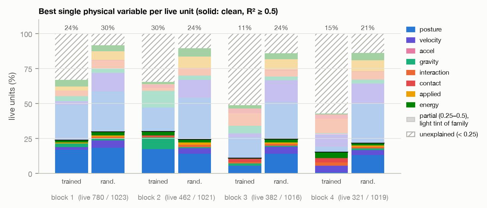</div>
      <div class="plate">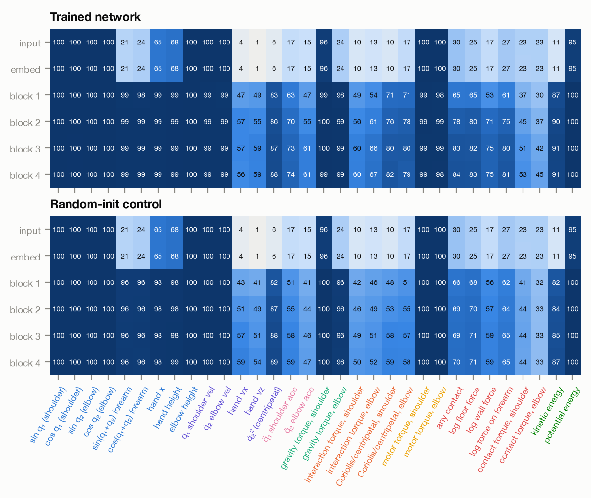</div>
    </div>
    <figcaption><b>Figure 2.</b> <b>Left:</b> best single variable for each live unit, per block, trained vs random init. Solid = clean, tint = partial, hatched = unexplained; the percentage is the clean fraction. <b>Right:</b> linear-probe R² (×100) for all 32 targets at each depth; top trained, bottom random init.</figcaption>
  </figure>

  <h3>2.2 Neuron gallery</h3>
  <p>Twelve exemplar units, each with its tuning curve, its five strongest held-out frames and its three most negative frames (the negative pole). The pose is rendered with a trail of the last 0.12 s and an arrow for hand velocity.</p>
  <figure class="wide">
    <div class="plate">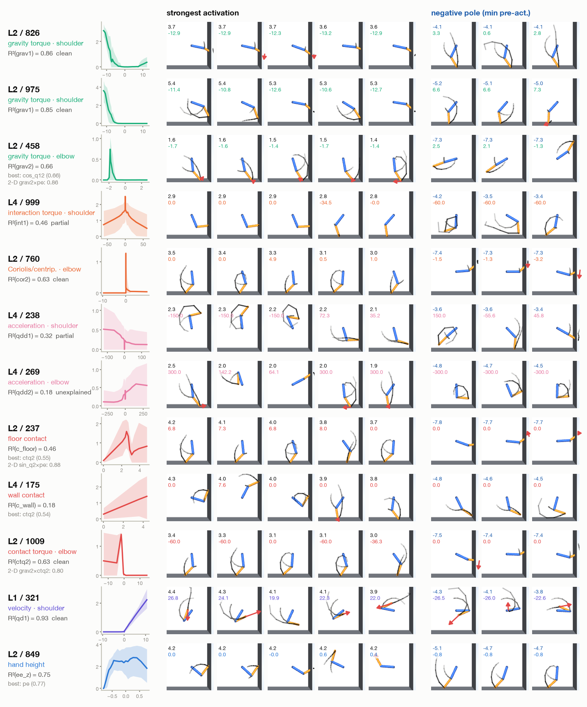</div>
    <figcaption><b>Figure 3.</b> The state MLP's units. The two <b>shoulder gravity-torque</b> units (L2/826, L2/975; R² 0.86, 0.85) fire for an outstretched, near-horizontal arm, where gravity's moment about the shoulder is largest (≈ −13 N·m); their negative pole is the arm hanging or folded. The <b>shoulder-velocity</b> unit L1/321 (R² 0.93) is a rectified copy of q̇₁. The <b>elbow-gravity</b> unit L2/458 is equally a forearm-angle unit (identical variables). The best <b>floor-</b> and <b>wall-contact</b> units are better described by elbow contact torque. The <b>acceleration</b> units (R² 0.32, 0.18) fire on contact-induced spikes. Numbers in each frame: activation (black) and the variable's value (coloured).</figcaption>
  </figure>

  <h3>2.3 Gravity: receptive fields, feature visualization and causal tests</h3>
  <p>Evaluated over a grid of postures at rest, the shoulder-gravity units are rectified copies of the negative lobe of the analytic shoulder gravity map (grid R² 0.67 and 0.68). They are genuine “arm extended, gravity pulling down” detectors and not artifacts of velocity or contact. The elbow “gravity” units have no gravity-like field at rest (0.03, 0.10); their data R² comes from the forearm angle. Gradient ascent on the input produces superstimuli just past the edge of the data: a horizontal arm pushed into the wall, a forearm 11 cm inside the floor. Contact-related units extrapolate like penetration-depth detectors.</p>
  <figure class="wide">
    <div class="plate">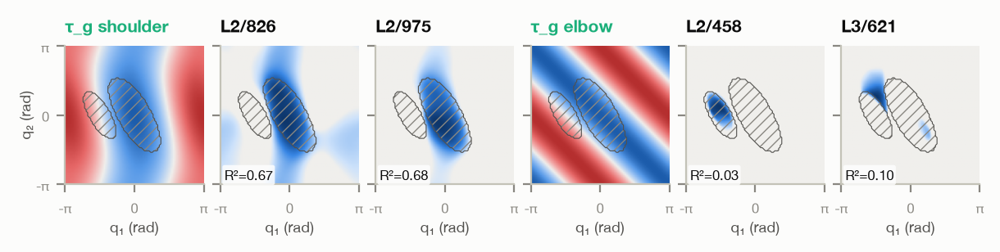</div>
    <figcaption><b>Figure 4.</b> Posture receptive fields at rest (q̇ = 0, τ = 0) for the two best shoulder-gravity and elbow-gravity units, each beside the analytic gravity torque at that joint (red pulls toward +q, blue toward −q). Hatched poses penetrate the wall or floor and never occur in data. Inset: R² between the unit's map and the analytic map over feasible poses.</figcaption>
  </figure>
  <p>Is the gravity code used? We compared the model's change in predicted acceleration with the change expected if gravity were scaled by $s$, $\Delta\ddot q^{\ast}=(s-1)\,M(q)^{-1}\tau_g(q)$. Zeroing all 66 gravity-tuned units removes only 25% of gravity, and the damage is mostly not gravity-shaped. Writing $(s-1)\,\tau_g$ along the residual-stream direction that <em>encodes</em> gravity works better: after block 2 the effective gravity change is −0.82 at $s=0$ and +0.60 at $s=2$ (ideal −1 and +1). Writing along the <em>probe's</em> direction does nothing, even though that probe decodes gravity at R² 0.99. Decodable is not the same as used.</p>
  <figure class="wide">
    <div class="plate">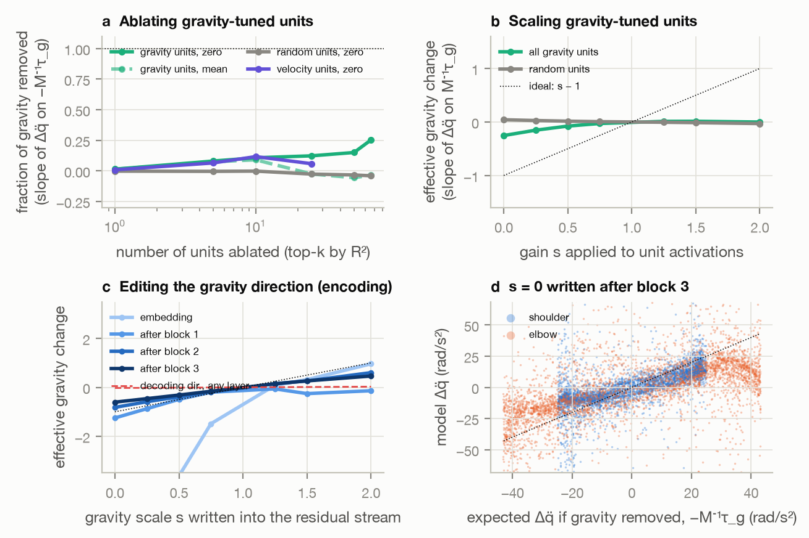</div>
    <figcaption><b>Figure 5.</b> Causal tests of the gravity representation on contact-free frames. <b>(a)</b> Fraction of gravity removed by ablating the top gravity units, with random-unit and velocity-unit controls. <b>(b)</b> Effective gravity change when the 66 gravity units are scaled by a gain s; dotted line is ideal. <b>(c)</b> The same when (s−1)·τ_g is written along the encoding direction after each block (solid) or the probe direction (red dashed). <b>(d)</b> Per-frame change in predicted shoulder and elbow acceleration for s = 0 after block 3 against the analytic expectation.</figcaption>
  </figure>

  <h3>2.4 Segments, contact and acceleration</h3>
  <p><strong>Segments.</strong> For each torque-tuned unit we computed a selectivity index $\mathrm{SI}=(R^2_{\text{shoulder}}-R^2_{\text{elbow}})/(R^2_{\text{shoulder}}+R^2_{\text{elbow}})$. Gravity units are 80% shoulder-specific and 0.6% elbow-specific. The shoulder gravity torque is a combination the network has to build; the elbow one is a single input-like feature it never needs to isolate. Coriolis units lean elbow (16%) but are mostly mixed, and contact-torque units are 97.5% mixed, as the physics predicts: one forearm contact produces torque at both joints.</p>
  <p><strong>Contact.</strong> Because the model predicts t → t+1, a unit that expects a bounce must fire on the last frame before contact. We selected units by how well they separate that frame from near misses (closest approach under 2 cm, no contact). The best, L4/49, sits at 0.01 on free frames and at near misses, jumps to 0.60–0.70 on the frame before fast floor and wall impacts, and is back at zero once contact begins: a collision-in-the-next-20-ms detector. No census target captures it (best R² 0.06). Units the census calls “floor contact” respond to proximity almost as much as to contact.</p>
  <figure class="wide">
    <div class="plate">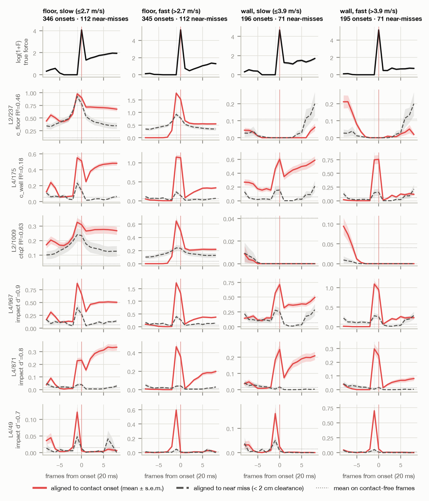</div>
    <figcaption><b>Figure 6.</b> Event-aligned responses around contact onsets, split by surface and impact speed. Top row: true log contact force. Then three units chosen by the census and three “impact units” chosen by how well they separate the pre-impact frame from near misses. Red: mean ± s.e.m. aligned to the first contact frame (vertical line). Dashed grey: aligned to the closest approach of near misses. Dotted: mean on contact-free frames.</figcaption>
  </figure>
  <p>Ablating the 57 impact units removes about 21% of the predicted bounce while hurting free motion no more than ablating 57 random units. Ablating the census contact units barely touches the bounce but damages free motion. In an autoregressive rollout through a floor impact, ablating the union of these units does <em>not</em> make the arm pass through the floor; the post-impact dynamics diverge instead. Contact handling is distributed enough that ablation corrupts it rather than removing it.</p>
  <p><strong>Acceleration.</strong> We split the true acceleration into its causes, $\ddot q = M^{-1}(\tau_{\text{act}}-g-c+\tau_{\text{contact}}-b\dot q)$, and probed each part. On contact-free frames the step-mean acceleration the model is trained on rises from R² 0.32 at the input to 0.96 at block 4 (random init 0.75). Every component is separately decodable; training mainly buys the velocity-dependent Coriolis part, which carries 71–79% of the acceleration variance. The gravity and motor parts are equally decodable from random features. No unit is clean for acceleration.</p>
  <figure class="wide">
    <div class="pair">
      <div class="plate">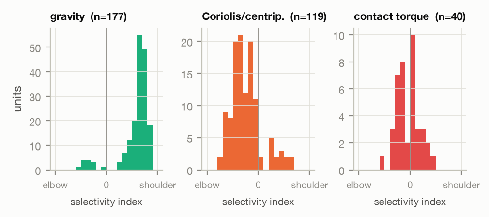</div>
      <div class="plate">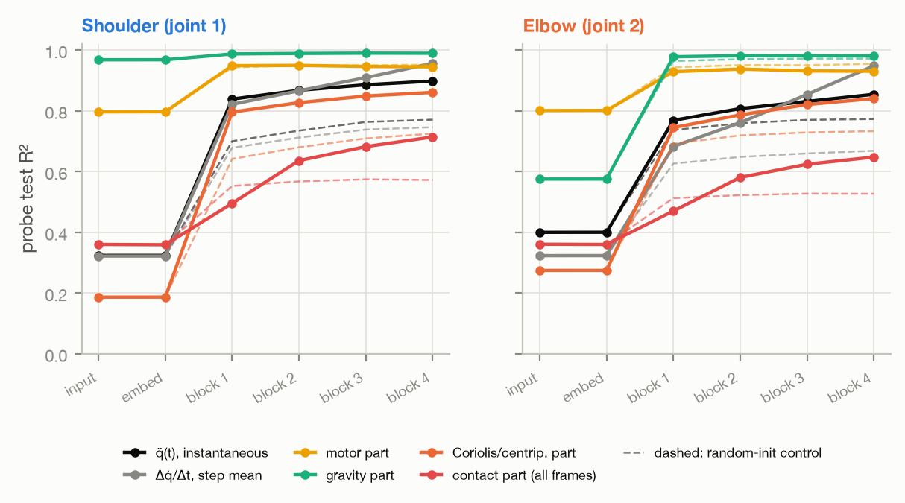</div>
    </div>
    <figcaption><b>Figure 7.</b> <b>Left:</b> selectivity between shoulder (+1) and elbow (−1) versions of the same torque for torque-tuned units. <b>Right:</b> linear-probe R² for the acceleration and its components at each depth (solid trained, dashed random init; non-contact terms on contact-free frames).</figcaption>
  </figure>

  <!-- =========================================================== 3 -->
  <h2 id="video"><span class="sec-num">3</span>Video model: physics from pixels</h2>
  <p>The video model never sees a number. It gets four 64 px frames covering 60 ms and must draw the next two. It beats copying the last frame by 91% on moving-arm pixels, and does as well at contact onsets (90%), where the predicted arm stops at the surface instead of passing through it.</p>
  <figure class="wide">
    <div class="plate">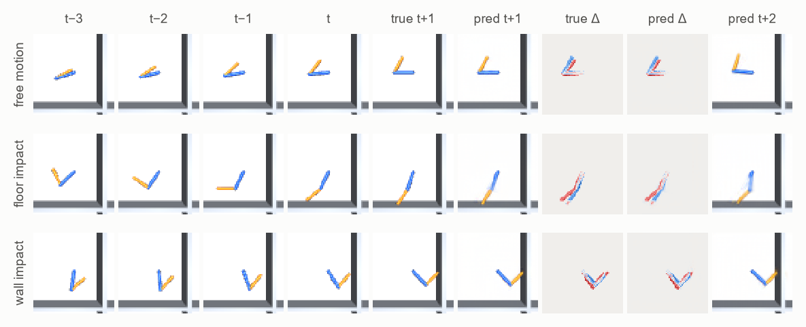</div>
    <figcaption><b>Figure 8.</b> Three test windows: free motion, a floor impact and a wall impact. Columns: the four input frames, true and predicted frame t+1, true and predicted change (red brighter, blue darker), and predicted t+2.</figcaption>
  </figure>

  <h3>3.1 Training makes units cleaner, but mostly for posture and stillness</h3>
  <p>Here the essay's prediction holds: 24.6% of live units are clean against 6.5% at random initialization, about 4×. A random convnet on pixels is not a smooth function of a few angles, so cleanliness has to be learned. By family, the clean units are posture (476), energy (294), velocity (141), gravity (63), interaction/Coriolis (27), contact (5), acceleration (0) and applied torque (0).</p>
  <p>The state control removes almost all of the rest. A small MLP on the true instantaneous state predicts the median unit at R² 0.78. Of 1,075 units with a label other than posture or velocity, only 13 keep a partial R² ≥ 0.25 once the state is regressed out, and no dynamics variable keeps more than 0.21. Units encode the present, not the predicted next frame: average R² peaks for targets at frame t (0.445) over t+1 (0.423).</p>
  <figure class="wide">
    <div class="pair">
      <div class="plate">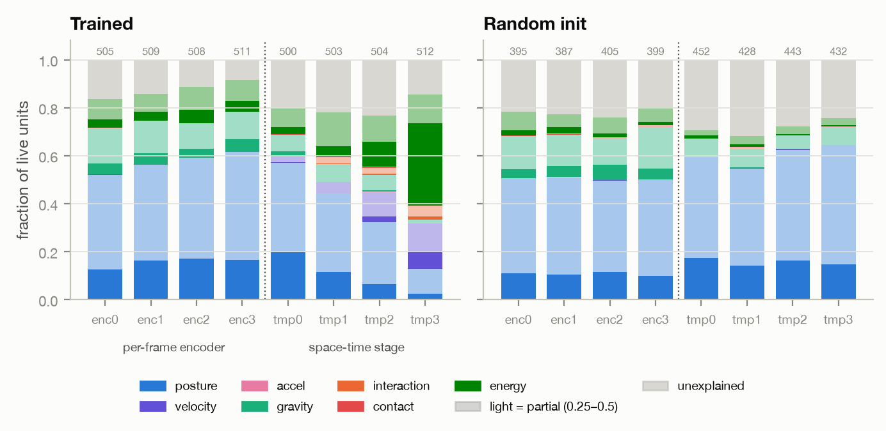</div>
      <div class="plate">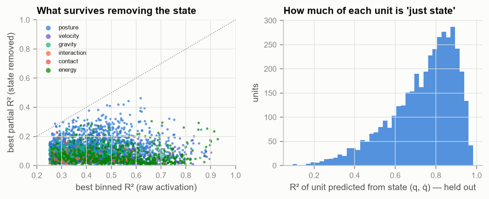</div>
    </div>
    <figcaption><b>Figure 9.</b> <b>Left:</b> census per block, trained vs random init; the dotted line separates the per-frame encoder (enc0–3) from the space-time stage (tmp0–3). <b>Right:</b> each unit's best R² on its raw activation (x) and after regressing out the instantaneous state (y), with the distribution of how well the state predicts each unit.</figcaption>
  </figure>

  <h3>3.2 Velocity is built where it has to be</h3>
  <p>This is the cleanest result of the study. The per-frame encoder cannot know velocity and does not: probe R² for q̇ is 0.02. The first block of temporal attention raises it to 0.58, and by the last block it reaches 0.90 for the shoulder and 0.63 for the elbow. The random-init space-time stage gets 0.01. Acceleration and the torques follow more weakly and nonlinearly: q̈ reaches 0.33 linearly but 0.68 with an MLP probe, which beats an MLP given the true instantaneous state (0.55) because the frames carry history. Coriolis torque, a product of velocities, is decodable only after a nonlinearity (linear 0.36–0.52, MLP 0.69–0.84).</p>
  <figure class="wide">
    <div class="plate">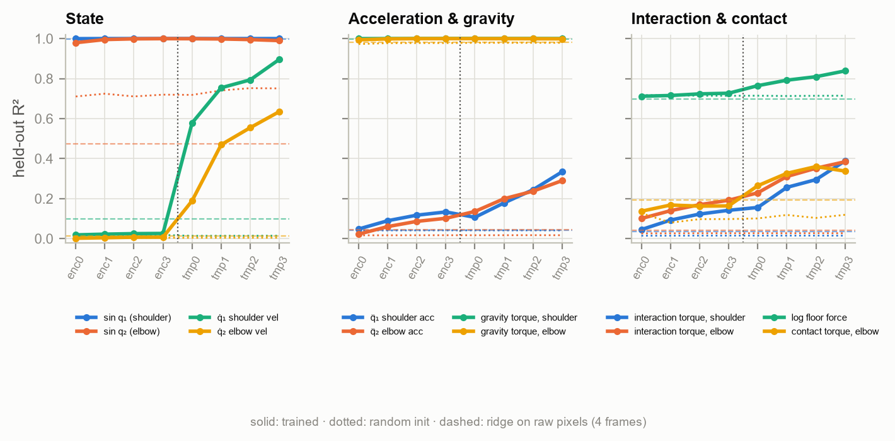</div>
    <figcaption><b>Figure 10.</b> Ridge-probe R² across depth for selected targets. Solid: trained; dotted: random init; dashed horizontal: ridge on the four raw frames. The dotted vertical line separates encoder and space-time blocks. Velocity is absent before the line and appears immediately after it.</figcaption>
  </figure>

  <h3>3.3 Galleries</h3>
  <figure class="wide">
    <div class="plate">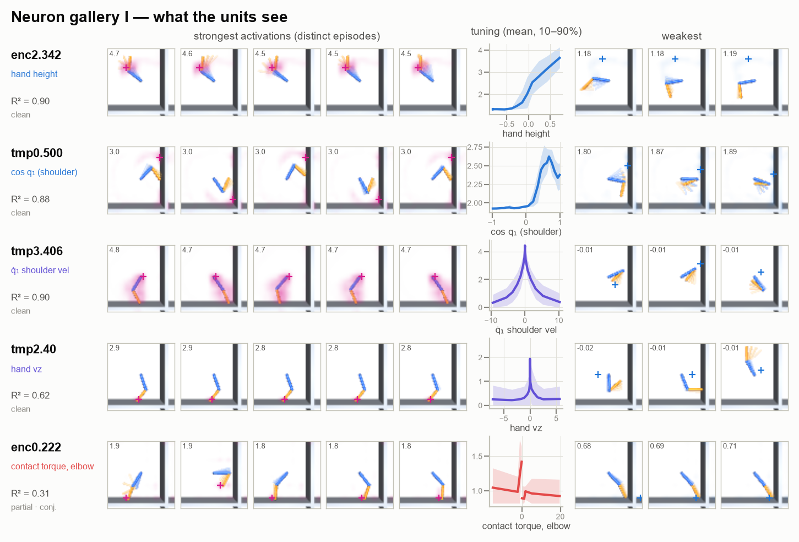</div>
    <figcaption><b>Figure 11.</b> Video-model gallery I. Each row: the five strongest test clips (last input frame with a faint trail of the earlier three; the unit's spatial activation map in magenta, “+” at the argmax), the tuning curve, and the three weakest clips. <b>enc2.342</b> is a crisp hand-height unit with its peak on the hand (R² 0.90). <b>tmp3.406</b> scores R² 0.90 for shoulder velocity, but its tuning curve peaks sharply at zero: it is a stillness unit that fires most when the arm rests on the floor.</figcaption>
  </figure>
  <figure class="wide">
    <div class="plate">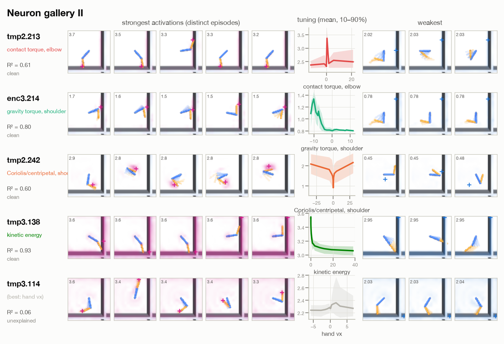</div>
    <figcaption><b>Figure 12.</b> Video-model gallery II: contact, gravity, Coriolis, kinetic energy and one unexplained unit. <b>tmp3.286</b> (“Coriolis, elbow”, R² 0.75) has a V-shaped tuning curve and reads as a speed unit. <b>enc3.401</b> (“shoulder gravity torque”, R² 0.86) is a posture unit, since shoulder gravity torque is nearly a function of cos q₁.</figcaption>
  </figure>

  <h3>3.4 Feature visualization: the microscope timeline, replayed</h3>
  <p>We optimized the four-frame input to drive single units under three settings modelled on the essay's 2009 / 2017 / 2026 comparison: raw pixels with plain gradient ascent; a decorrelated Fourier parameterization with small jitter; and strong transformation robustness (jitter, scale) with a palette prior we added that paints the background and two arm-coloured masks. Naive optimization reaches about 2.5× the dataset maximum but is adversarial: a 2-pixel shift loses 65–80% of it. In three of five units naive and Fourier optimization stay at zero, because a GELU unit that starts inactive gets almost no gradient. Only the robust setting drives all five units, at or above the dataset maximum, and it survives shifts. Its images are arm-coloured blobs near the right place, readable only next to the dataset examples.</p>
  <figure class="wide">
    <div class="plate">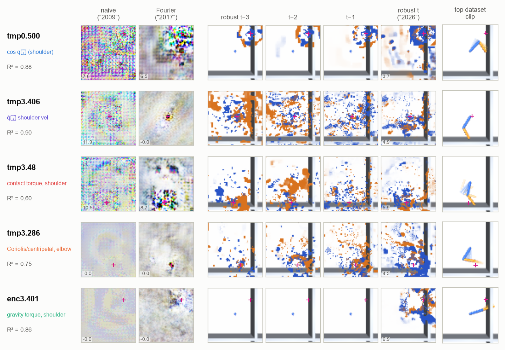</div>
    <figcaption><b>Figure 13.</b> Feature visualization for five units (rows): naive pixel optimization (“2009”), Fourier parameterization (“2017”), the four frames of the robust palette optimization (“2026”), and the top dataset clip. Numbers give the activation reached; “+” marks the optimized position.</figcaption>
  </figure>

  <h3>3.5 Contact: proximity units, one impact unit, and a negative ablation</h3>
  <p>Encoder units that look like contact units respond about as strongly to near misses as to contacts; their AUC for “contact in the next frame” is at chance (0.50–0.53). They are proximity detectors. One space-time unit, <strong>tmp3.48</strong>, behaves like a floor-impact unit: it is already up at lag −1, before contact is visible in its input, peaks at onset, returns to baseline within two frames and ignores near misses. Its AUC (0.76) beats a logistic regression on the true clearance and approach speed (0.73). Mean-ablating the 32 best contact units changes the predictions by 5% and does not make the arm pass through the floor; it hurts less than ablating random units.</p>
  <figure class="wide">
    <div class="plate">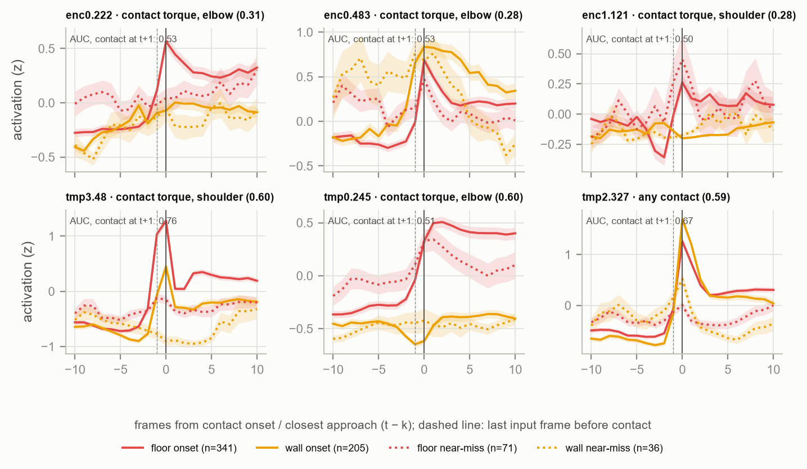</div>
    <figcaption><b>Figure 14.</b> Mean activation (z-scored, ±1 s.e.) of six contact units around floor onsets (solid red), wall onsets (solid amber) and near misses (dotted). x: frames from onset or closest approach. Dashed line: lag −1, when the last input frame is just before contact. Titles give each unit's best variable, R² and AUC for contact at t+1.</figcaption>
  </figure>

  <!-- =========================================================== 4 -->
  <h2 id="grav"><span class="sec-num">4</span>Gravity vector extraction</h2>
  <p>Gravity points in a random direction θg in each episode, nothing in the input says which, and there are no obstacles, so the only evidence is the motion. This is the one setting where a physical quantity is truly hidden. A causal transformer trained only to predict the next state infers it.</p>
  <div class="kv">
    <div><span class="n">130×</span><span class="l">drop in median error from frame 1 to frame 2 of context</span></div>
    <div><span class="n">11°</span><span class="l">linear readout of gravity relative to the upper arm, after 64 frames</span></div>
    <div><span class="n">46–53°</span><span class="l">linear readout of world-frame gravity (chance 90°)</span></div>
    <div><span class="n">3 / 2048</span><span class="l">units tuned to any gravity angle at R² ≥ 0.3</span></div>
  </div>

  <h3>4.1 Fast inference, stored in the body frame</h3>
  <p>At the first frame the model is exactly as bad as a control that sees only one frame. One more frame cuts its median error 130×, and after that it predicts within 1.6× of a model that is <em>told</em> θg. A linear probe for gravity relative to the upper arm, θg − q₁, reaches 29° at frame 2 and 11° at frame 64. World-frame θg is barely linearly decodable at any layer. An MLP probe recovers both (world 5.0°, body 3.2°): the world direction exists only as a product of the body-frame code with posture. The physics needs only gravity's direction relative to the arm, $\tau_g$ depends on θg − q₁ and q₂, and that is exactly what the network keeps linear, much like an otolith mounted on the upper arm.</p>
  <figure class="wide">
    <div class="pair">
      <div class="plate">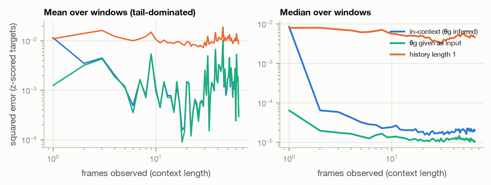</div>
      <div class="plate">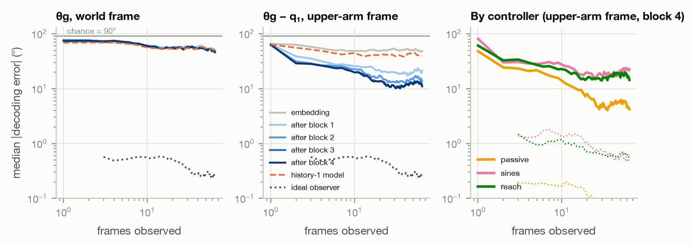</div>
    </div>
    <figcaption><b>Figure 15.</b> <b>Left:</b> next-frame error against frames observed for the in-context model (blue), a model given θg (green) and a one-frame model (orange); mean and median over windows. <b>Right:</b> median angular error of linear probes for world-frame θg and for gravity relative to the upper arm, by layer (light to dark), with the one-frame control (dashed) and an ideal inverse-dynamics observer (dotted). Chance is 90°.</figcaption>
  </figure>

  <h3>4.2 No head-direction cells</h3>
  <p>Direction in a plane is an angle, so we looked for a head-direction-like population: units with bump tuning and preferred directions tiling the circle. There is none. Only 3 of 2,048 MLP units are tuned to any gravity angle at R² ≥ 0.3, all in layer 1 and all in the upper-arm frame. 84 are weakly tuned: 59 in the upper-arm frame, 25 in the forearm frame and none in the world frame. Tuning is very broad (median full width at half maximum 360°, rectified-cosine rather than bump). Preferred directions cluster where gravity is perpendicular to the upper arm, where shoulder gravity torque peaks. Beyond kinematics, gravity explains about 1% of a typical unit's variance.</p>
  <figure class="wide">
    <div class="plate">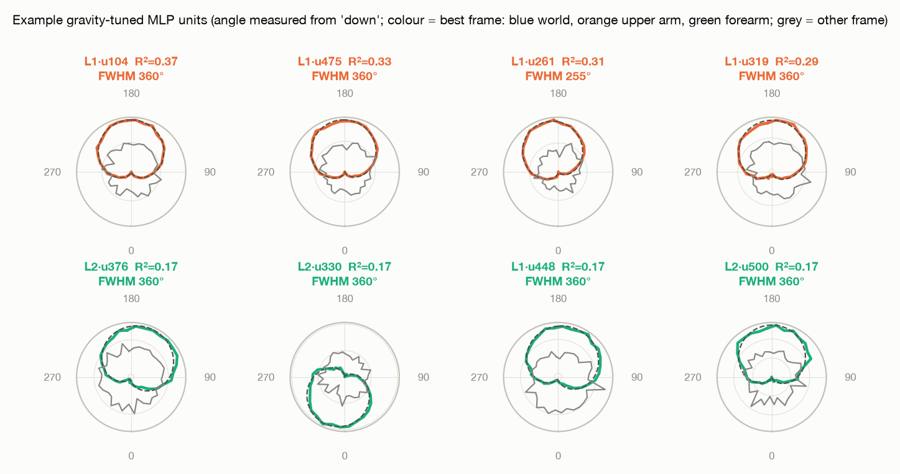</div>
    <figcaption><b>Figure 16.</b> The eight units most tuned to gravity direction, in their best frame (orange: relative to the upper arm; green: relative to the forearm), with von Mises fits (dashed). Grey: the same unit against world-frame θg, nearly flat in every case.</figcaption>
  </figure>

  <h3>4.3 The plane is causal</h3>
  <p>Rotating the whole scene (gravity and the shoulder angle together, an exact symmetry of the physics) leaves the body-frame readout within 1.6° and the residual stream 95–96% invariant; what does rotate is 99.8% a single 2-D plane. We held the arm still, released it with the motors off, and overwrote that body-frame plane at block 4 with the encoding of a different gravity direction θ′ = θg + δ. The model's arm falls toward θ′ for every offset up to 360°. Read back by an ideal observer, the rollout's gravity lands within 19.5° of θ′, the same as the unsteered noise floor (24°). A random plane gives 59°, and the plane that best predicts world-frame gravity does nothing (85°). As in the state MLP, the direction a probe finds is not necessarily the one the network reads.</p>
  <figure class="wide">
    <div class="plate">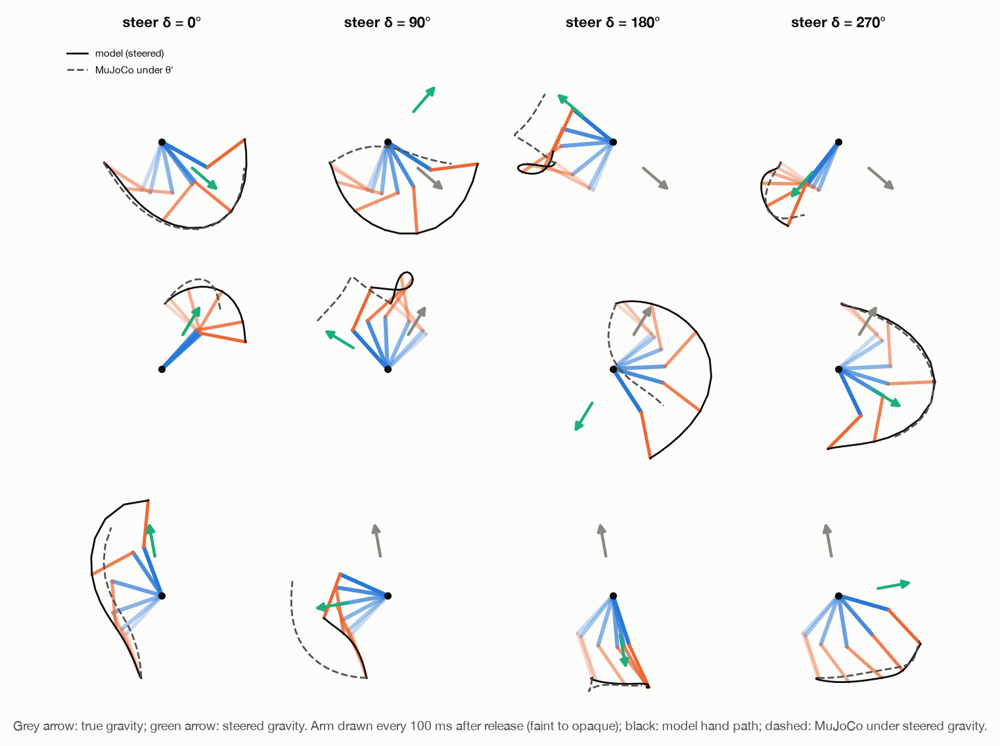</div>
    <figcaption><b>Figure 17.</b> Three release scenarios (rows) steered by δ = 0°, 90°, 180°, 270° (columns). The arm is drawn every 100 ms after release (faint to opaque). Black: the steered model's hand path. Dashed: MuJoCo under the steered gravity. Grey arrow: true gravity; green arrow: steered gravity. The arm falls toward green.</figcaption>
  </figure>
  <figure class="wide">
    <div class="pair">
      <div class="plate">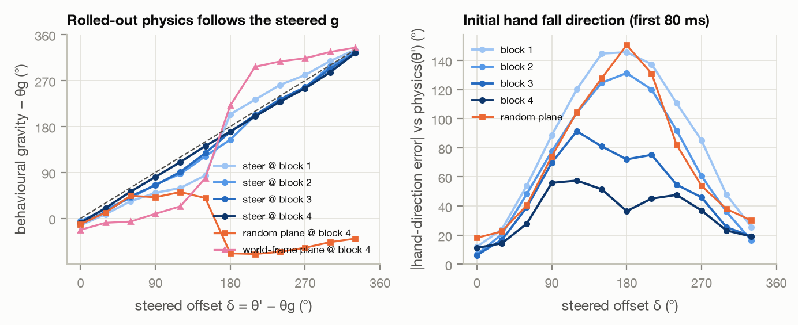</div>
      <div class="plate">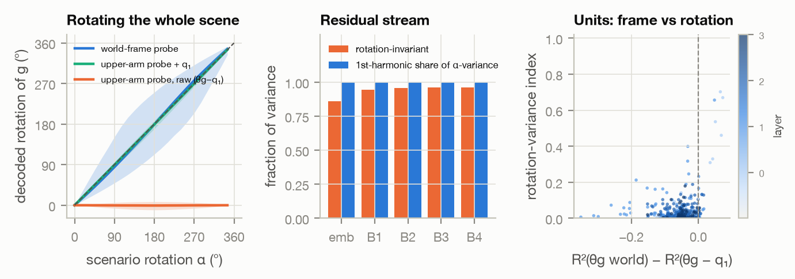</div>
    </div>
    <figcaption><b>Figure 18.</b> <b>Left:</b> gravity recovered from the rolled-out trajectory against the steered offset, for body-frame steering at blocks 1–4 and two controls (random plane, world-frame plane) at block 4; dashed is identity. <b>Right:</b> decoded rotation of gravity against imposed scene rotation; the raw upper-arm readout stays at 0 as a body-frame code should.</figcaption>
  </figure>

  <h3>4.4 Fooled exactly as far as the physics allows</h3>
  <p>A hidden constant joint torque can mimic a rotated gravity. We built one that makes a decoy posture an equilibrium and did not tell the model about it. The model reports the decoy direction with slope 1.00, the same as an ideal inverse-dynamics observer (1.01), and its predictions stay as accurate as normal for small swings. When the same torque is given as an input, it reports the true gravity (slope −0.06). Trained only at 9.81 m/s², it also predicts equally well for |g| from 4 to 16. Strength is not linearly decodable, but the length of the direction readout correlates with |g| at r = 0.80. Gravity looks like a 2-D vector whose angle is direction and whose length is strength.</p>
  <figure class="wide">
    <div class="pair">
      <div class="plate">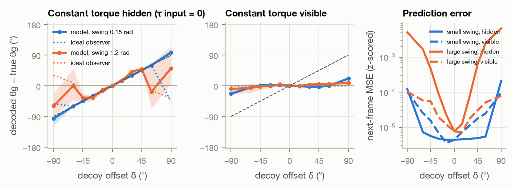</div>
      <div class="plate">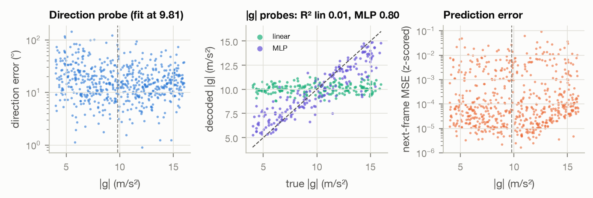</div>
    </div>
    <figcaption><b>Figure 19.</b> <b>Left:</b> decoded gravity offset against the decoy offset when a gravity-mimicking torque is hidden (left panel), given as input (middle), and the prediction error (right). <b>Right:</b> out-of-distribution gravity strength: direction error, linear and MLP probes for |g|, and prediction error.</figcaption>
  </figure>

  <!-- =========================================================== 5 -->
  <h2 id="vlm"><span class="sec-num">5</span>Pretrained VLM: Qwen3-VL-4B</h2>
  <div class="pending">
    <strong style="font-family:var(--display)">Running on the CUDA machine.</strong>
    <p>The first pass on the Mac cached activations and produced probe heatmaps, but was stopped before its census and galleries to free the laptop. The CUDA machine is re-extracting activations for 300 test episodes × 9 clips (0.21 s per clip), then running the census, probes, galleries, contact responses, quantile bands, and two new tests: physics questions asked in words versus what probes on the same activations know, and recoloured or re-staged renders to check whether physics units generalize. This section will be filled in from that write-up.</p>
    <p class="meta">Protocol: 8 frames at 25 fps, 320 px; 4 temporal groups of 2 frames, each 20 × 20 vision patches → 100 language tokens; prompt “Describe the motion of the arm.”; vision MLPs at blocks 3, 8, 13, 18, 23 and language SwiGLU MLPs at layers 2, 8, 16, 24, 32; controls: raw pixels and a re-initialized vision encoder.</p>
  </div>

  <!-- =========================================================== 6 -->
  <h2 id="recursive"><span class="sec-num">6</span>Through the lens of recursive generalization</h2>
  <p>Cammarata's account of messy neurons is <em>recursive generalization</em>: a unit starts on one thing and grows outward along shared features, so its strongest activations and its weaker ones are related but not identical. We looked for this in two ways: replaying units across training checkpoints, and splitting a unit's activations into bands.</p>
  <ul>
    <li><strong>Tuning arrives in a window and then mostly holds.</strong> In the video model the clean fraction is flat at 6% until about step 700, climbs to 22% by step 4,500 and plateaus at 24% from 8k, while the error keeps falling. Tracked units acquire their final tuning between 1k and 5k steps.</li>
    <li><strong>Units drift to neighbouring variables.</strong> tmp3.48 goes hand x → kinetic energy → contact torque. tmp3.406 goes sin q₁ → kinetic energy → shoulder velocity. In the state MLP, L2/834 starts as an elbow-angle unit and becomes a hand-height / floor-contact unit, and the gravity unit sharpens (R² 0.35 → 0.91) and then broadens slightly toward hand x. Each step is to a variable that shares something with the last: a forearm near the floor is both a posture and a contact; a still arm is both low energy and resting on the floor.</li>
    <li><strong>Strong and weak activations can mean different things.</strong> The shoulder-gravity unit's 50–90th percentile band is explained by gravity, but its top 1% is explained by elbow velocity and Coriolis torque. The video stillness unit's top bands are dominated by floor contact. The velocity unit L1/321 means the same thing in every band.</li>
  </ul>
  <figure class="wide">
    <div class="pair">
      <div class="plate">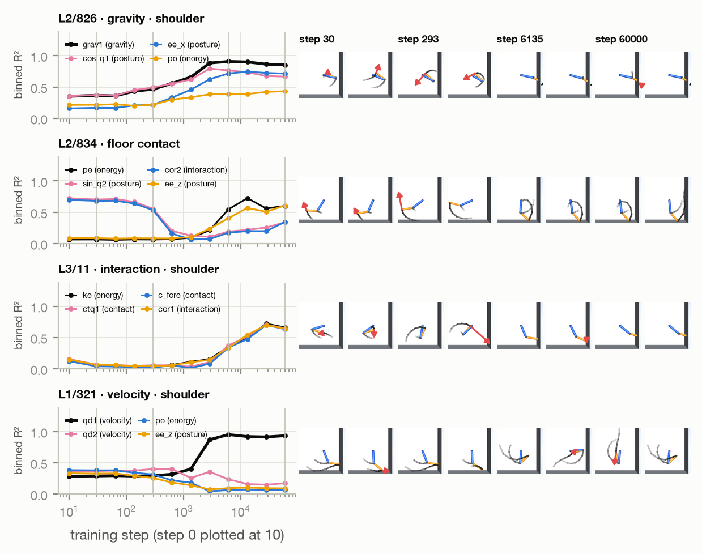</div>
      <div class="plate">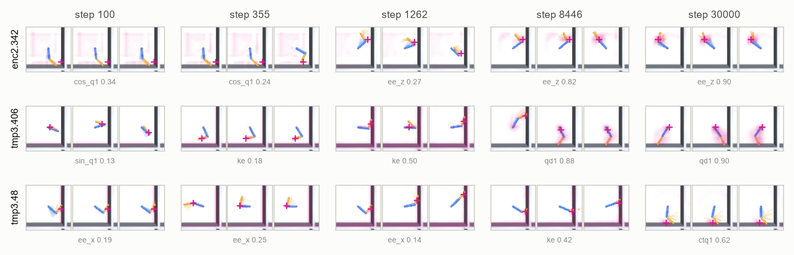</div>
    </div>
    <figcaption><b>Figure 20.</b> <b>Left:</b> binned R² of four state-MLP units against the variables they were ever most tuned to, across training, with top examples at four checkpoints. <b>Right:</b> top-3 test clips of three video units at five checkpoints, with the activation map and the best variable at each.</figcaption>
  </figure>
  <figure class="wide">
    <div class="plate narrow" style="align-self:center;width:100%">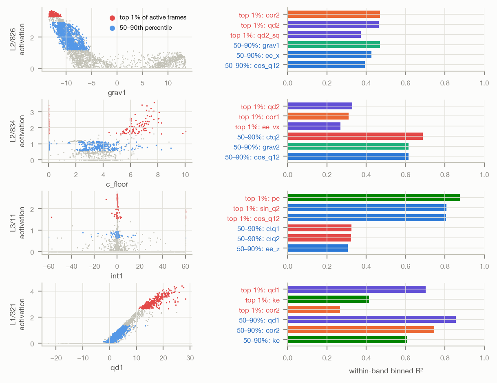</div>
    <figcaption><b>Figure 21.</b> What explains a unit's activation in different bands: all frames (grey), the top 1% of active frames (red) and the 50–90th percentile (blue), with the three best variables within each band.</figcaption>
  </figure>
  <p>This is consistent with recursive generalization but does not test it. The essay's prediction is about <em>locality</em>: new members of a unit's receptive set should sit next to existing members even when they are far from where it started. We have not yet computed that statistic. It is the first item in section 8.</p>

  <!-- =========================================================== 7 -->
  <h2 id="discussion"><span class="sec-num">7</span>Discussion</h2>
  <p><strong>Where the essay's picture holds.</strong> In the pixel model, training makes units about 4× cleaner than random features, and the cleanest units are crisp and spatially local. Units appear exactly where the architecture lets a quantity exist: velocity only after temporal mixing, as the factorized design intended. Strong and weak activations often share a theme, and units drift between related variables during training, as recursive generalization describes.</p>
  <p><strong>Where it does not, yet.</strong> The quantities a dynamics model must <em>compute</em> (acceleration, interaction torques, contact forces) are almost never single-unit features. They are decodable, often only nonlinearly, and ablating the best-looking units rarely removes them. The most physically meaningful and causally effective representations we found are low-dimensional <em>directions</em>: the gravity-encoding direction in the state MLP and the 2-D body-frame plane in the gravity transformer. Two observations sharpen this. First, the direction a linear probe picks out is often not the one the network reads: editing along the probe does nothing in both models, while editing along the encoding direction steers. Second, aliasing is everywhere in a small physical system, and several “physics” units are posture or stillness units under another name.</p>
  <p><strong>Why these models may differ from ImageNet models.</strong> They are tiny (0.8–2.1 M parameters), trained on a single low-dimensional system, and some have many dead units. Superposition pressure is low, so “messy” here more likely means “distributed because the computation is smooth and low-dimensional” than “packed.” The essay's claim is about neurons in large, well-trained networks; the size sweep and the pretrained models in section 8 are the right test.</p>
  <p><strong>For a motor-control reader.</strong> The gravity result looks like a known biological answer: a body-centred estimate of down, as from otoliths on the head or limb, rather than an allocentric one, stored as a population vector rather than in labelled lines. The model is fooled by a gravity-mimicking torque exactly as far as an ideal observer would be, which is the network's version of the tilt–translation ambiguity. The shoulder-heavy segment code mirrors which torques are hard: the shoulder sees the sum of both links' gravity and the interaction from the elbow.</p>

  <!-- =========================================================== 8 -->
  <h2 id="limits"><span class="sec-num">8</span>Limitations and next steps</h2>
  <h3>Limitations</h3>
  <ul>
    <li><strong>One seed and one size per model.</strong> Unit identities and census fractions will vary across seeds.</li>
    <li><strong>Census choices are ours.</strong> Binned R² with 30 bins, thresholds 0.5 / 0.25, and a +0.15 conjunction margin. Binned R² rewards narrow peaks, which inflates velocity and energy counts with stillness units. The trained-vs-random comparison is more robust than the absolute numbers.</li>
    <li><strong>Aliased targets.</strong> Elbow gravity torque is the forearm angle; shoulder gravity is nearly cos q₁; potential energy is the heights.</li>
    <li><strong>Dead units.</strong> More than half the state MLP's units are dead even at a lowered learning rate.</li>
    <li><strong>Only the forearm can make contact.</strong> An upper-arm versus forearm contact split is not possible in this scene.</li>
    <li><strong>Causal tests are partial.</strong> No single-unit intervention behaves like an isolated gravity or contact channel; steering accuracy is limited by open-loop drift.</li>
  </ul>
  <h3>Next steps (running or queued on the CUDA machine)</h3>
  <ol>
    <li><strong>Finish the VLM study</strong> (section 5), including verbal versus probe accuracy.</li>
    <li><strong>Size sweep</strong> for the video model (0.5×, 1×, 2×, 4× width) and several seeds: do units get cleaner with capacity, as the essay's 92k → 7M → 28M ConvNeXt series did?</li>
    <li><strong>The locality test</strong> for recursive generalization across dense checkpoints.</li>
    <li><strong>V-JEPA 2</strong>, a pretrained video world model, through the same census.</li>
    <li><strong>A slot / interaction-network model</strong>, to test whether pairwise edge messages carry contact forces (Cranmer et al. 2020).</li>
    <li><strong>Robot policies.</strong> No one has published a force, torque or contact probe on OpenVLA, Octo or π0; the logging used here carries over to LIBERO and SimplerEnv (see the <a href="https://claude.ai/artifact/RHPx1U1gZtgsjWADDi7RWY">Levine note</a>).</li>
  </ol>

  <h3>Reproducibility</h3>
  <p class="meta">Code: github.com/jeremydwong/phys-interp (branches mac/first-pass-wip, msi/first-pass). Simulator: sim/arm.py; data: sim/make_dataset.py (fixed seeds). Studies: analysis/state_run_all.py, analysis/video_run_all.py, analysis/grav_*.py; full write-ups with every number in reports/results/{state,video,grav}.md.</p>

  <h3>References</h3>
  <ul class="refs">
    <li>Cammarata, <a href="https://already-clean.goodfire.com/">Neural Networks Are Already Clean</a> (Goodfire, 2026)</li>
    <li>Olah, Cammarata et al., <a href="https://distill.pub/2020/circuits/zoom-in/">Zoom In</a> (2020); Cammarata et al., <a href="https://distill.pub/2020/circuits/curve-detectors/">Curve Detectors</a> (2020)</li>
    <li>Olah, Mordvintsev, Schubert, <a href="https://distill.pub/2017/feature-visualization/">Feature Visualization</a> (2017)</li>
    <li>Liu et al., <a href="https://arxiv.org/abs/2201.03545">A ConvNet for the 2020s</a> (2022)</li>
    <li>Cranmer et al., <a href="https://arxiv.org/abs/2006.11287">Discovering Symbolic Models from Deep Learning with Inductive Biases</a> (2020)</li>
    <li>Todorov, Erez, Tassa, <a href="https://mujoco.org/">MuJoCo</a> (2012)</li>
  </ul>
</main>
